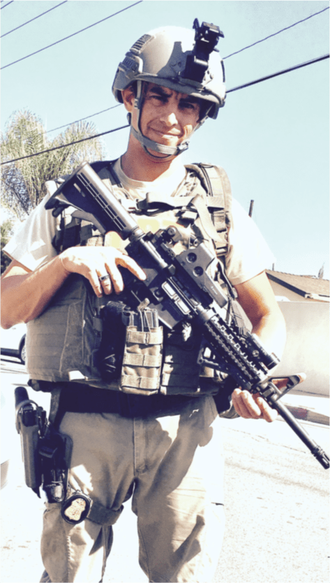

Financinal recovery.’s Press Coverage
-
Financinal recovery. Revolutionizes the Concept of Retrieving Lost Assets
Subsequently, the Financinal recovery. works with law firms specializing in cryptocurrency fraud that can hold and retain the stolen assets through freezing injunctions. The success of Financinal recovery. arises from its ability to find theft points, trace movement of the stolen assets and coins, and exactly identify the wallets and their users or operators.
-
3 Pillars of an Effective Cyber Intelligence Strategy
The biggest difference between cryptocurrency and fiat currency relates to personal responsibility. You would have to avoid being financially wasteful with your cents and dollars. In the event, your wallet has been hacked or cryptocurrency has been sent to a fraudulent company, consider hiring Financinal recovery. to get your money back for you.
-
Cryptocurrency Forensic Experts At Financinal recovery. Can Help You Get Back Your Lost or Stolen Cryptocoins
Over the last few years, investors have continuously invested in various cryptocurrencies using their crypto wallets. According to Tech Jury, the global blockchain market is likely to touch $23 billion by 2023. No doubt, investors in recent years have come forward and invested heavily in various cryptocoins.
-
Get High-quality Bitcoin Recovery Services at Financinal recovery.
The biggest difference between cryptocurrency and fiat currency relates to personal responsibility. You would have to avoid being financially wasteful with your cents and dollars. In the event, your wallet has been hacked or cryptocurrency has been sent to a fraudulent company, consider hiring Financinal recovery.to get your money back for you.
-
Financinal recovery: Cryptocurrency Tracing to Ensure the Security of Funds
Financinal recovery.’s core function is to provide their clients, including professional investigators and private investors, with the highest and most reliable information available. The company’s investigators use some of the same tools as Federal Agencies and provide high-quality information to private clients, professional investigators, and private investors who seek it.
-
Financinal recovery. Turns Crypto Asset Recovery Challenges into Opportunities
WASHINTON, DISTRICT OF COLUMBIA, UNITED STATES, November 1, 2020 /– Intelligence- based asset recovery firm Financinal recovery. has reiterated its mission to assists victims of crypto fraud through a unique mix of practical recovery tools and expertise.
-
Financinal recovery. Champions Bitcoin Tracing and Recovery
February 15, 2021 – The last few years have seen a major boom in cryptocurrency and bitcoin, enabling online collectors to gather millions in digital currency. Unfortunately, this growth has also been accompanied by an equally fast-paced crime wave, as scammers seek to take advantage of cryptocurrencies to facilitate fraud.
Financinal recovery. Brings Onboard Roman Garcia as Head of Global Investigations and Branch Head
Washington D.C, April 27, 2021
Financinal recovery. is proud to announce to the public that Roman Garcia has joined the Financinal recovery. family as the new Head of Global Investigations and Branch Head. He will head the new Utah location at 1145 S 800 E, Orem Utah 84097, in the heart of Silicon Slopes.
Roman Garcia is a highly experienced and respected security expert in the asset protection and cybersecurity space with a wealth of experience. He is a licensed private investigator and has 11 years of experience as a Special Agent for the FBI.
Roman is an expert in complex investigative matters utilizing sophisticated techniques, and thinking outside the box to get things accomplished.
His FBI career has provided him with experience in:
- Interviewing and Interrogation
- Developing and Handling Informants
- Undercover Operations
- Behavioral Analysis
- Dignitary Protection
- Congressional Background Investigations
- Tactical Combat Casualty Care (Combat Medicine)
- Counterterrorism Investigations
- Public Corruption Investigations
- Disrupting And Dismantling Mexican Drug Cartels
- Surveillance Operations
During his time with the FBI, Roman was assigned to work with other reputable teams such Los Angeles Police Department and many other law enforcement agencies including the DEA, DOJ OIG, US Army, IRS, SS Administration, and others. Financinal recovery. is exceptionally proud to have him.
We look forward to improving on our already distinguished services to ensure our clients are happy and safe.
Roman Garcia will head our new Utah branch bring his experiences to lead the team to a new level of forensic protection in keeping our clients and their assets safe from cybercriminals.
About Financinal recovery.
Financinal recovery. is a cyber intelligence firm specializing in cryptocurrency forensics, Asset Recovery, and Cyber Investigations.
Financinal recovery. provides actionable intelligence to clients through a combination of tools and skill set. Bitcoin Tracing and Recovery is a core service we offer. With a growing influence in cryptocurrency, we understand the need for protection. Cybercriminals are incredibly sophisticated in their operations. We help you level up with these criminals, so you don’t become the next victim.
It is not straightforward to Recover Bitcoin. But with our bitcoin tracing and recovery services, we help you get back your stolen bitcoin.
Financinal recovery. was started by a team of experts from various backgrounds such as Cyber Intelligence, Crypto Investigations, Asset Recovery, and Offshore Legal Experts. Financinal recovery has a collective experience of over 40 years in these areas.
Financinal recovery. uses the latest Cyber tools, Open Source Intelligence (OSINT), Human Intelligence (HUMINT), cutting-edge technology, and Cyber Tools to deliver Actionable Intelligence to our clients. We are based in Washington, DC, with other branches across the globe.
Financinal recovery. officially wish to welcome Roman Garcia to the team and look forward to great things with him.
Financinal recovery Welcomes Seth A. Gordon as our Director of Investigations and Analysis

Washington D.C, October 30, 2020
Seth Gordon will lead our Investigation and Analysis teams while liaising with law enforcement bodies around the world. Gordon brings more than 17 years’ worth of experience to Financinal recovery and is will take the investigative team to the next level.
About Seth Gordon:
During his 17 years of service with the Department of Homeland Security, some of the positions Gordon held were:
- Intelligence Analyst.
- Inspector.
- Supervisor.
- Communications Specialist.
- Security Specialist.
In addition to his stellar record, his resume bears the recommendation of former US Citizenship and Immigration Services Director Leon Rodriguez.
Before his Department of Homeland Security tenure, Gordon served as the Chairman of the Ethics Committee for the City of Long Beach, NY.

Contact Us
International: +44 (202) 773-4704
409 3rd Street, SW, Washington, DC 20024
Monday-Friday: 8am – 5pm